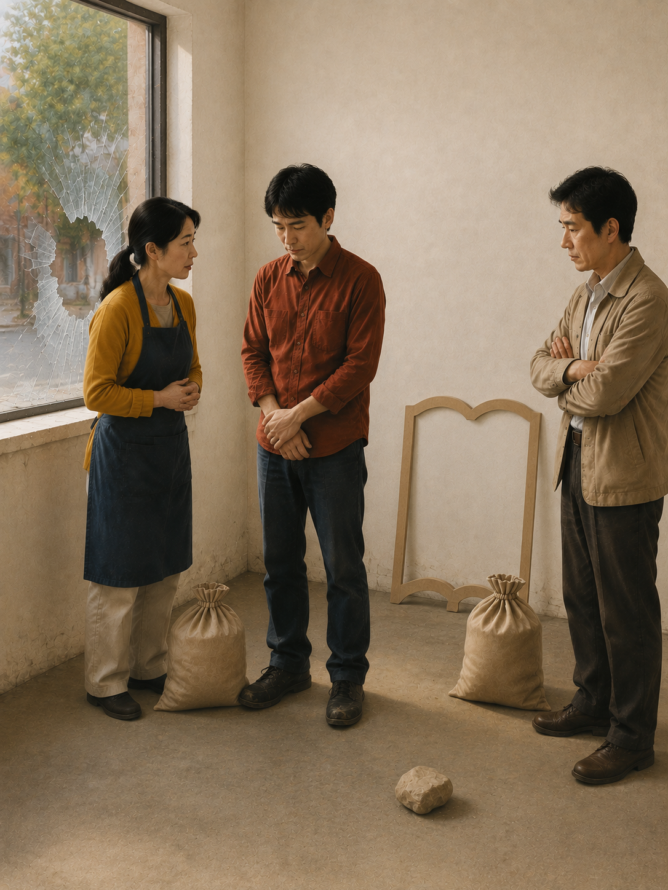
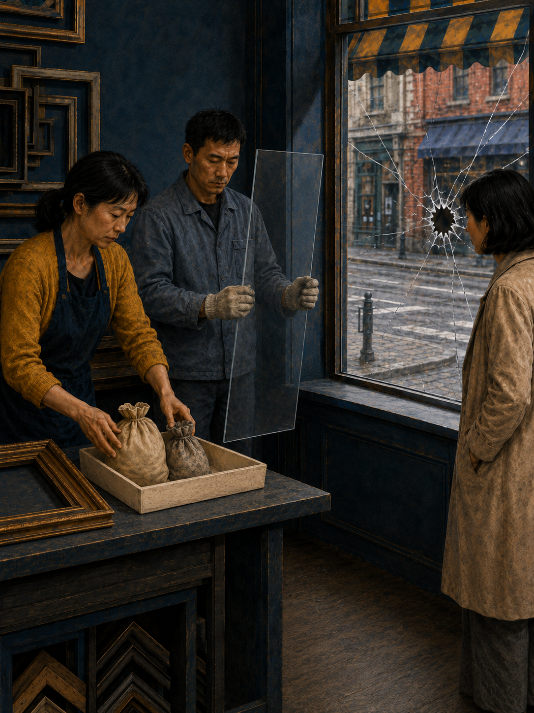
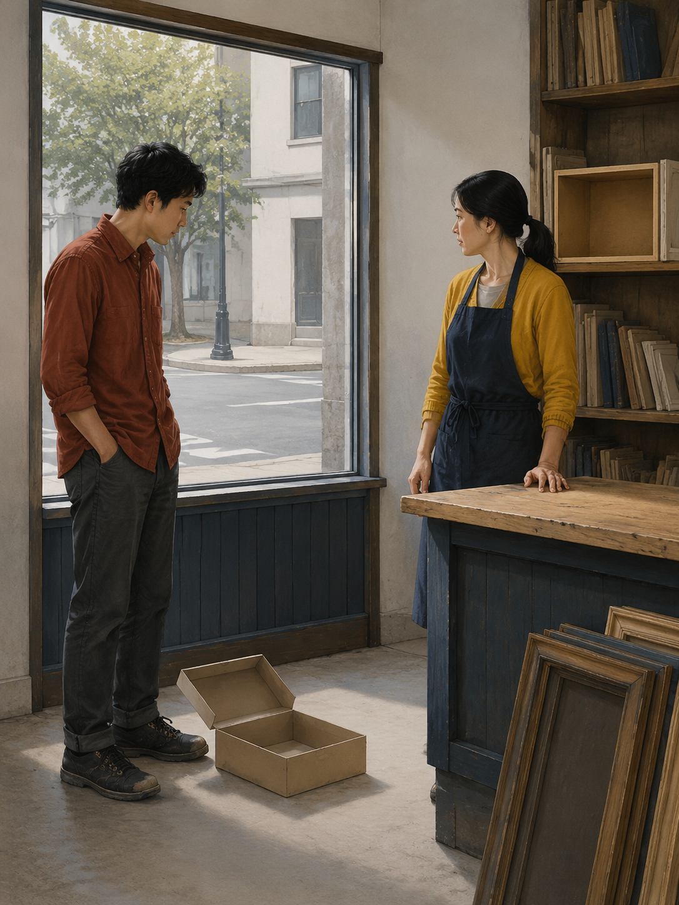
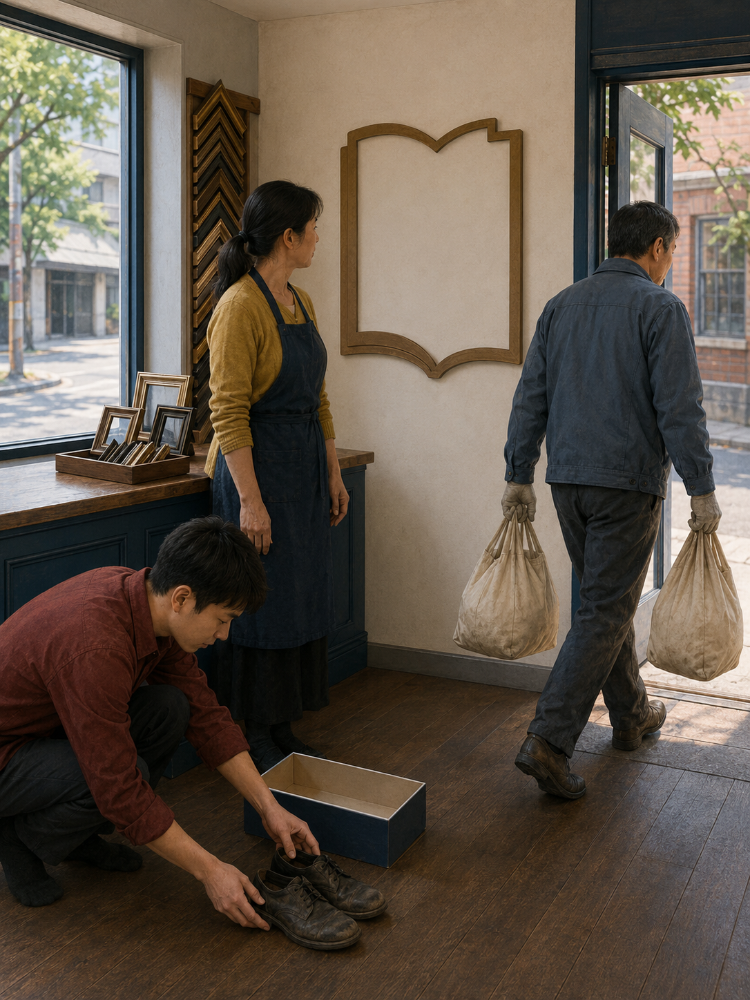
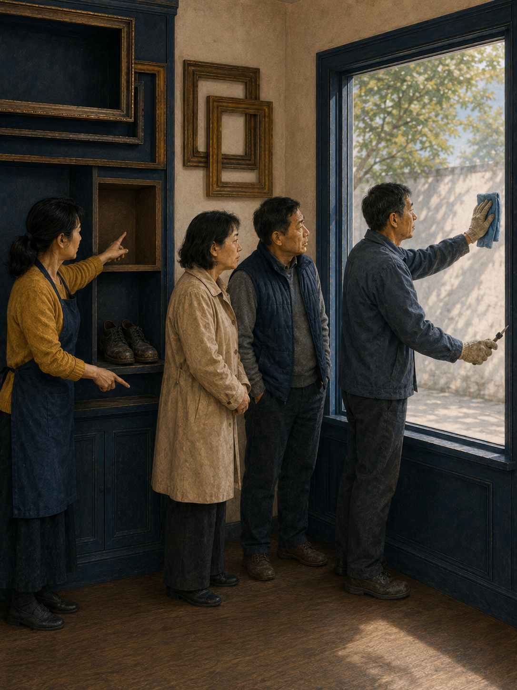
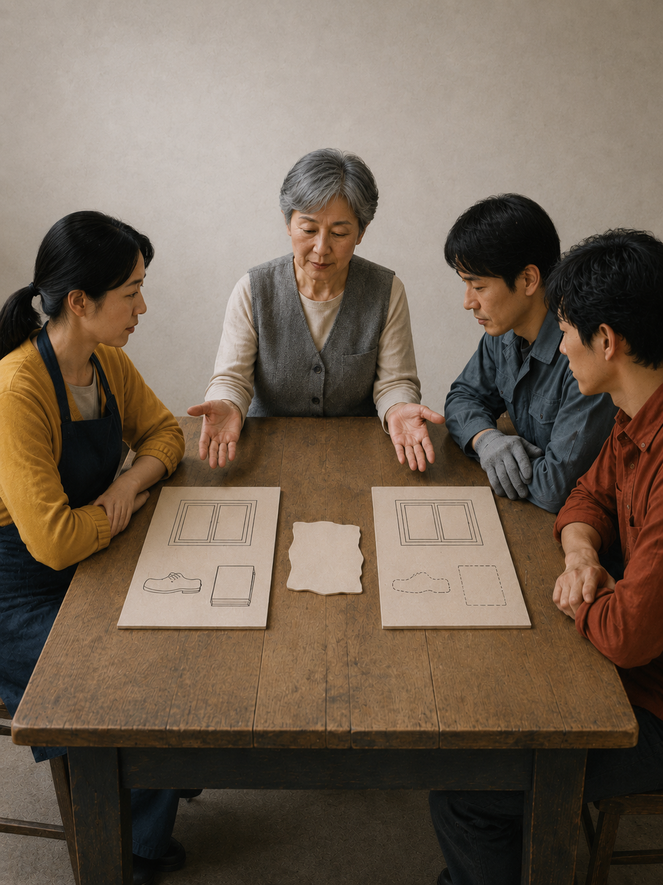
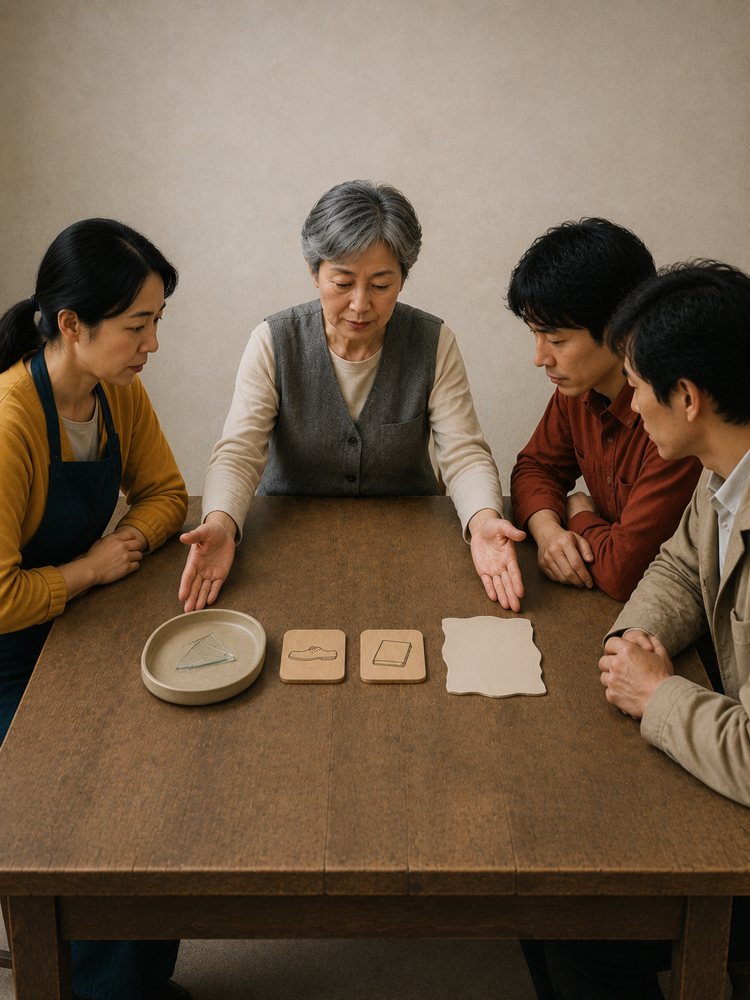

CARD 01 · 冲击
窗碎了，工作也停了一下
旁白飞石打破临街窗。左袋紧邻助手脚上唯一一双旧鞋，右袋紧邻空心书形计划板；两组相隔明显，板中空墙表示购书尚未发生。
LESSON 003 · 原创情景演绎
一扇临街窗被打破，修复活动立刻变得醒目；鞋、书和原本可能发生的安排，却更容易退出视线。
这是用于区分直接损失、替代用途与反事实假设的分析故事，不是实证研究、现行法律判断或普遍政策结论。

CARD 01 · 冲击
旁白飞石打破临街窗。左袋紧邻助手脚上唯一一双旧鞋，右袋紧邻空心书形计划板；两组相隔明显，板中空墙表示购书尚未发生。

CARD 02 · 可见支出
旁白新玻璃、工时和两个预算袋都有清楚去向；修复活动真实发生。

CARD 03 · 看不见的替代
旁白旧鞋没有更换，参考书也没有添置。它们是原计划，不是已经发生的损失记录。

CARD 04 · 资源转移
旁白两个预算袋转到修窗，旧鞋放在空鞋盒旁；空心书形占位板仍透出背景，表示书没有买到。

CARD 05 · 比较净变化
旁白唯一窗上的维护工作是真的；窗的损失和被挤出的鞋书计划也不能从比较中消失。

CARD 06 · 反事实边界
旁白如果窗没碎，鞋和书是否一定购买仍有不确定性；比较不能把计划写成事实。

CARD 07 · 程序结语
旁白记录可见损失、替代用途和假设，只是一种分析程序，不是实证、现行法或普遍政策结论。